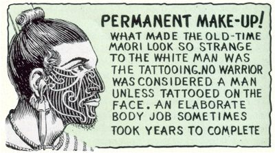

like “handy” men.
There are no striking differences between the United States and New Zealand in ordinary social life, and you should find it easy to get along. The New Zealand accent may seem strange to you so don’t be surprised if they also smile at your accent and language. They will probably call you Yanks or Yankees, whether you come from the North or from the South, and will say you have a Yankee accent even if you speak with a South Carolina drawl. Women will be pleased, but will think it a little strange, when you say “yes ma’am” to them, though men will not think it strange to hear “yes sir.”
Speaking of women, it is taken for granted that you will be discreet in your dealings with New Zealand girls.
Many of them are engaged or married to men who are fighting overseas. Do not take advantage of their loneliness. Remember that New Zealand is a small country with a small population. Any sort of scandal travels very quickly. Regard yourself not only as an ambassador for Uncle Sam, but as a soldier and a gentleman.
Your recently increased pay will go a long way in New Zealand where prices are comparatively low and where the rate of exchange is in your favor. So you may find yourself with more spending money than most New Zealand men, whether soldiers or civilians. Don’t toss it around. It won’t make you popular and can very easily make for hard feelings.
The Maoris. The New Zealand natives are called the Maoris, pronounced “mow” to rhyme with “cow” and “rie.” The correct plural is Maori but you will find most people putting an s on the end. These New Zealand natives are first cousins of the Hawaiians and are a proud, tough, fighting race who have won a status of complete equality with the white people in New Zealand, so never think of them or refer to them as natives or regard them as having any inferior status.
They sailed across thousands of miles of the Pacific, in open canoes, without the compass or any navigating